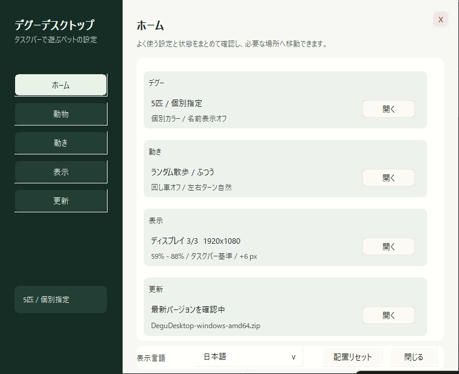
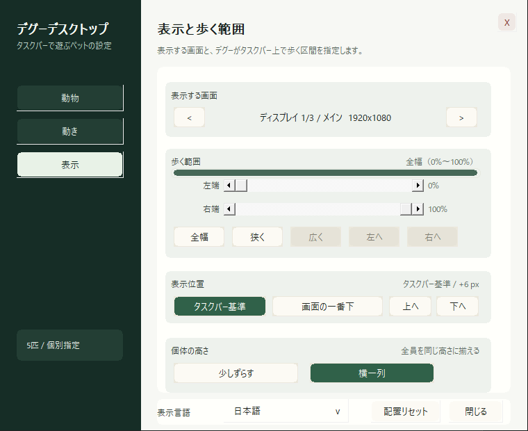
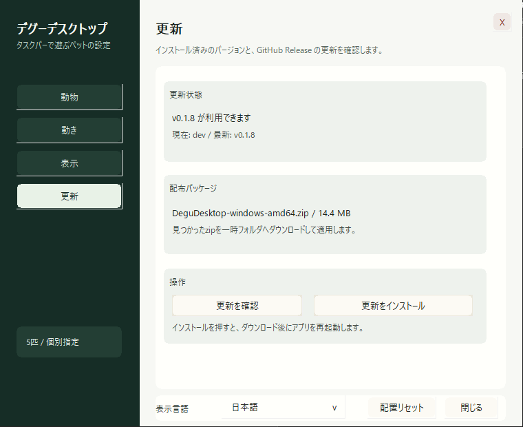

v0.1.12
2026-06-26
歩く範囲を画面単位で分かりやすく
- 複数モニタ時の歩く範囲を「選択した画面ぜんぶ」「画面1だけ」「画面1-2の一部」のように表示し、%だけでは分かりにくい状態を減らしました。
- 複数モニタへ切り替えた時は、まず選択中の画面ぜんぶを歩く範囲に戻すようにしました。
- 左端/右端のスクロールバーは残し、細かく狭めたい時だけ詳細調整として使えるようにしました。
Windowsのタスクバー上やMacのDock上で、ピクセル風のデグーがちょこちょこ歩き回るデスクトップペットです。 キーボード入力やクリックに反応し、Windows版では採食、食べる、掘る、毛づくろい、自然な左右ターン、入力中やランダム散歩中に回る回し車にも対応しています。
Mac版の通常ZIPはmacOS 12 Monterey以降対応です。M1 / M2 / M3 / M4などはApple Silicon版、Intel MacはIntel版を選んでください。 macOS 11 Big Surの場合はBig Sur版を選んでください。2015年頃のMacBookは多くの場合Intel版です。

DeguDesktop.exe を起動してください。
Mac版はZIPを展開して DeguDesktop.app をアプリケーションフォルダに入れてください。
ダウンロードできる公開版の主な変更点です。細かいビルドログや配布ファイルはGitHub Releasesで確認できます。
古い更新や配布ファイルは GitHub Releases を確認してください。
透明な最前面レイヤーで、タスクバー付近にデグーがいるように見せます。
設定画面とWindows版の右クリックメニューから1〜10匹を切り替えられます。Mac版のメニューバーにも1〜10匹の表示数を用意しています。
毛色、1匹ごとの色、名前、速度、入力モード、回し車、1画面/複数モニタの表示範囲、表示位置、個体の高さを調整できます。Windows版では言語やアップデート確認も扱えます。
歩く、止まる、走る、左右ターンをつなぎ、急な反転が目立たないようにしています。
Mac版はメニューバーのデグーアイコンから設定画面を開けます。速さ、1〜10匹の表示数、毛色、名前、モード、回し車を操作でき、Dock上の下端でデグーがうろちょろします。
Windows版では、小さな牧草、枝、種のようなアイテムを嗅ぐ、食べる、掘る、かじる、運ぶ動きがあります。
Windows版のキーボード反応モードでは入力中に回り、ランダム散歩モードでは自然な行動として時々回し車に入ります。
Windows版とMac版では、デグーをクリックするとハートなどの小さな吹き出しが出ます。デスクトップへのクリックは通します。
アグーチ、ブラック、ブルーグレー、グレー、クリーム、チョコレート、パイド系の毛色を収録しています。
このページのダウンロードリンクからWindows向けZIPとMac向けZIPを取得できます。Mac版は通常のmacOS 12 Monterey以降向けと、macOS 11 Big Sur互換版を分けています。
Windows版はタスクトレイのデグーアイコンから設定を開きます。表示数、色、名前、動き、回し車、1画面/複数モニタの表示範囲、画面単位の歩く範囲、更新確認をまとめて変更できます。
ZIPを展開して DeguDesktop.exe を起動します。タスクバー付近にデグーが表示され、タスクトレイにアイコンが入ります。
タスクトレイのデグーアイコンを右クリックして、メニューから「設定」を選びます。表示数の変更や終了もここからできます。
設定画面のホームで現在の状態を確認し、動物、動き、表示、更新の各設定へ移動します。
表示タブで1画面/複数モニタの表示範囲、範囲の移動、タスクバー基準/画面下、上下オフセット、歩く画面、左端/右端の詳細調整を変更します。



Degu Desktop is a small desktop pet app for Windows and macOS. Pixel-art degus walk above the Windows taskbar or along the bottom edge above the Mac Dock and react to typing and clicks. The Windows build also supports foraging, eating, digging, grooming, smooth turns, wheel running while you type or occasionally during random stroll, tray count shortcuts from 1 to 10, and settings for taskbar position and pet-height alignment. Download the Windows x64 or x86 ZIP from this page, or choose the macOS Apple Silicon, Intel, or Big Sur compatibility ZIP.
On Windows, open settings from the system tray: right-click the Degu Desktop tray icon and choose Settings. The settings window includes tabs for pets, motion, display range, and updates.